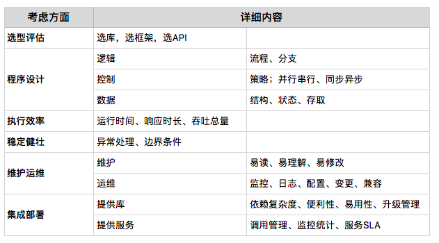
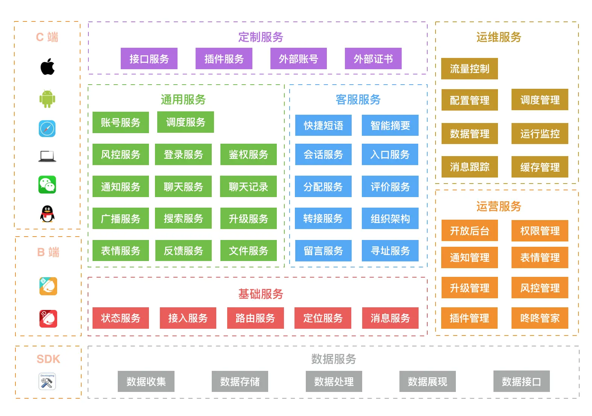
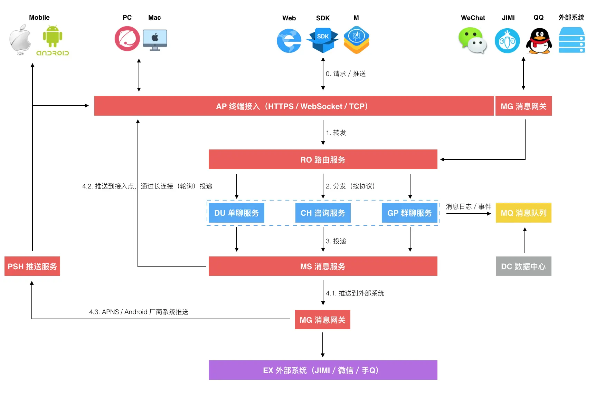
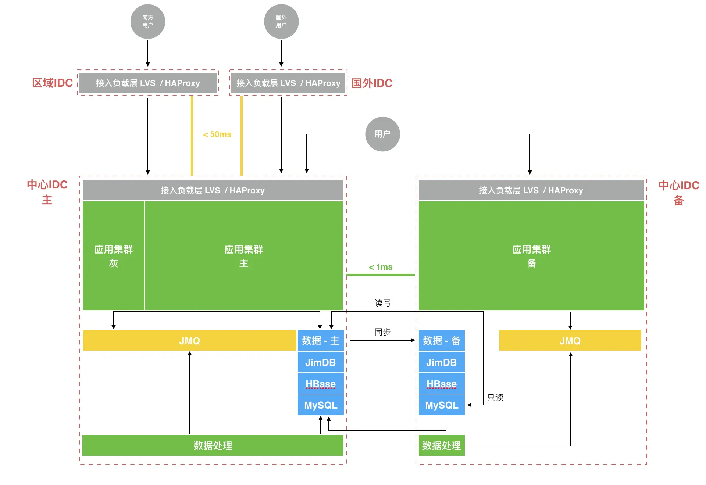
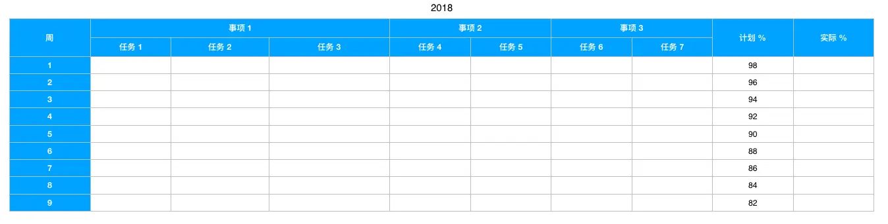
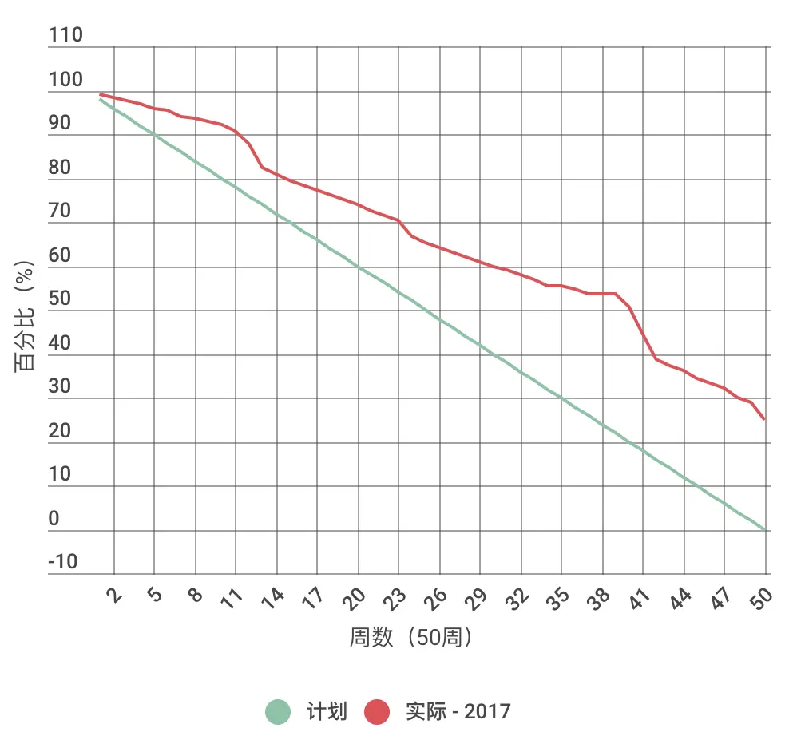
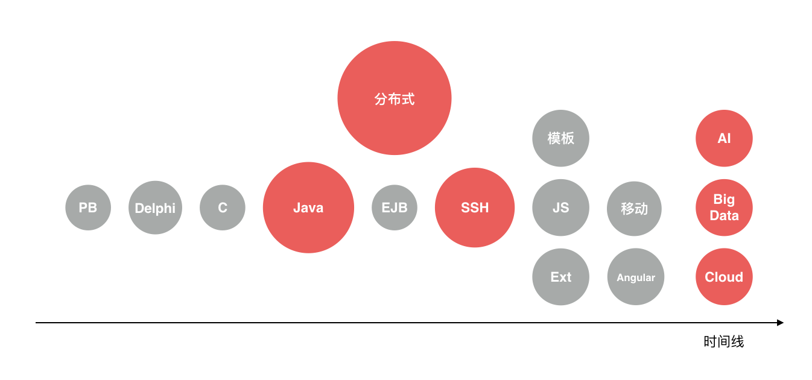
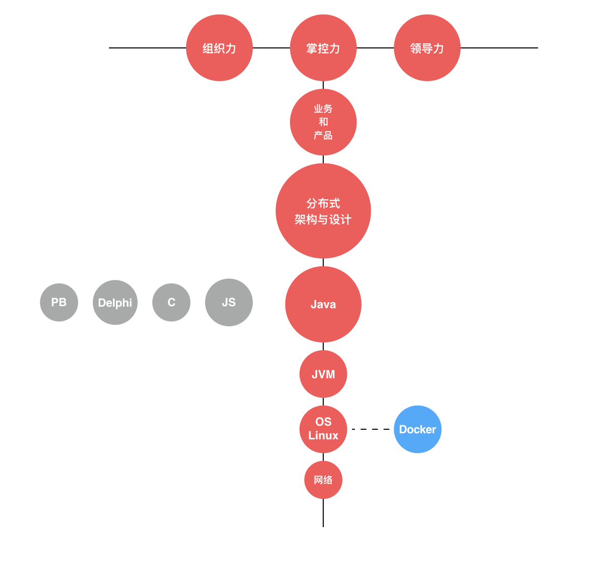
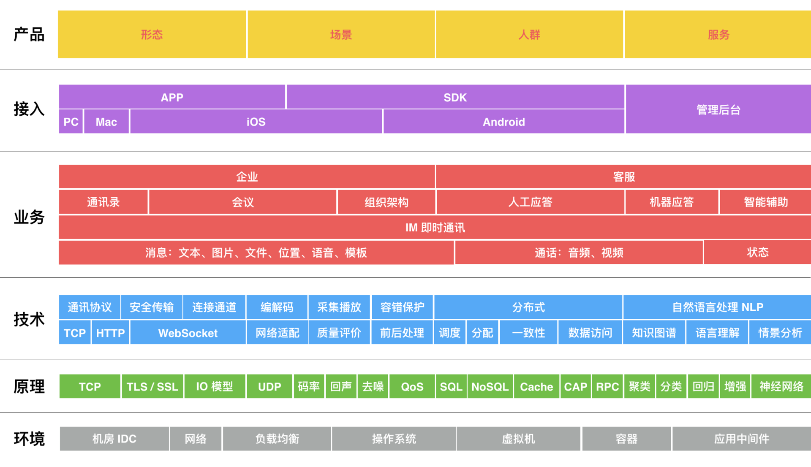
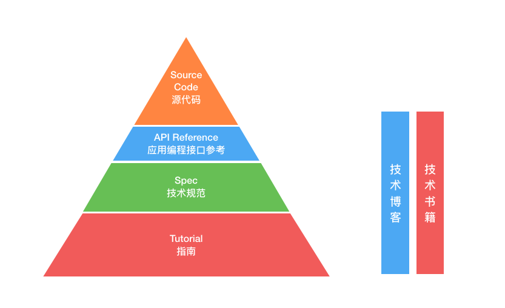

目录
程序员进阶攻略¶
启程:
1. 初心
2. 技术方向
3. 技术地图
修炼:
设计:
1. 架构与实现
2. 模式与框架
3. 多维与视图
编程:
4. 代码与分类
5. 粗放与精益
6. 炫技与克制
7. 编程的三阶段进化
Bug:
8. Bug 的空间属性
9. Bug 的时间属性
10.Bug 的反复出现
修行:
1. 根源
启程¶
一. 技术地图-掌握¶
开发平台:
包括一种编程语言、附带的平台生态及相关的技术 开发平台决定了你会成为什么类型和方向的程序员。比如：服务端、客户端或前端开发等 a. 编程语言 b. 平台生态
常用算法:
表达的是一个计算的动态过程，它引入了一个度量标准：时空复杂度
数据结构:
数组 Array 链表 Linked List 队列 Queues 堆栈 Stacks 散列 Hashes 集合 Sets 树 Trees 图 Graphs
二. 技术地图-了解¶
数据存储:
SQL 关系型数据库（如：MySQL、Oracle） NoSQL 非关系型数据库（如：HBase、MongoDB） Cache 缓存（如：Redis、Memcached） 按了解的深度需要依次知道如下几点: a. 如何用？在什么场景下，用什么数据存储的什么特性？ b. 它们是如何工作的？ c. 如何优化你的使用方式？ d. 它们的量化指标，并能够进行量化分析？
测试方法:
测试思维是一种与开发完全不同的思维模式 开发与测试这两种相反视角的切入维度，能真正长期地提高你写代码的效率和水平
工程规范:
代码结构 代码风格
开发流程:
敏捷方法论 导师制
源码管理:
最基本诉求: a. 并行：以支持多特性，多人的并行开发 b. 协作：以协调多人对同一份代码的编写 c. 版本：以支持不同历史的代码版本切换
修炼¶
架构与实现¶
把一种想法、一个需求变成代码，这叫 “实现”，而在此之前，技术上有一个过程称为设计，设计中有个特别的阶段叫 “架构”。关于软件架构的共同认知：软件系统的结构与行为设计。而实现就是围绕这种已定义的宏观结构去开发程序的过程。
『架构』是一种结构设计，它同时可能存在于不同的维度和层次上:
1. 高维度: 指系统、子系统或服务之间的切分与交互结构
2. 中维度: 指系统、服务内部模块的切分与交互结构
3. 低维度: 指模块组成的代码结构、数据结构、库表结构等
不论工作在哪个维度的架构师，他们工作的共同点包括下面 4 个方面:
1. 确定边界：划定问题域、系统域的边界
2. 切分协作：切分系统和服务，目的是建立分工与协作，并行以获得效率
3. 连接交互：在切分的各部分之间建立连接交互的原则和机制
4. 组装整合：把切分的各部分按预期定义的规则和方法组装整合为一体，完成系统目标
Note
架构师的交付成果是一整套决策流，文档仅仅是交付载体，而且仅仅是过程交付产物，最终的技术决策流实际体现在线上系统的运行结构中。
『实现』的最终交付物是程序代码，但这个过程中一般会有下面 6 个方面的考虑:
1. 选型评估
2. 程序设计
3. 执行效率
4. 稳定健壮
5. 维护运维
6. 集成部署

『实现』6 方面对应的详细内容¶
Important
架构与实现过程中，最重要的关注点是『熵』。实现的核心关注点，用一个字表达：简。
Note
架构与实现之间，存在一条鸿沟，这是它们之间的断裂带。断裂带出现在架构执行过程之中，落在文档上的架构决策实际上是静态的，但真正的架构执行过程却是动态的。
Important
当系统规模足够大了，没有任何架构师能够把控住全部的细节。在实践中，建议定期对系统的状态做快照，而非去把握每一次大大小小的变化，因为那样直接就会信息过载。
Note
在做快照的过程中我会发现很多的细节，也许和我当初想的完全不一样，会产生出一种 “要是我来实现，绝对不会是这样” 的感慨。但在我发现和掌握的所有细节中，我需要做一个判断，哪些细节上的问题会是战略性的，而我有限的时间和注意力，必须放在这样的战略性细节上。而其他大量的实现细节也许和我想的不同，但只要没有越出顶层宏观结构定义的边界即可。系统是活的，控制演化的方向是可行的，而妄图掌控演化过程的每一步是不现实的。关注与把控边界，这就比掌控整个领地的范围小了很多，再确认领地中的战略要地，那么掌控的能力也就有了支撑。架构与实现的鸿沟会始终存在，在这条鸿沟上选择合适的地方建设桥梁，建设桥梁的地方必是战略要地。
Note
架构升级，仅仅是一次系统的重新布局与规划，成本和效率的重新计算与设计，“熵” 的重新分布与管理。
Important
架构是关注系统结构与行为的决策流，而实现是围绕架构的程序开发过程；架构核心关注系统的 “熵”，而实现则顺应 “简”；架构注重把控系统的边界与 “要塞”，而实现则去建立 “领地”；所有架构的可实现性都是等效的，但实现的成本、效率绝不会相同。
让架构与实现分道扬镳的原因有:
1. 沟通问题：如信息传递障碍
2. 水平问题：如技术能力不足
3. 态度问题：如偷懒走捷径
4. 现实问题：如无法变更的截止日期（Deadline）
模式与框架¶
Note
《建筑的永恒之道》：每个模式都描述了一个在我们的环境中不断出现的问题，然后描述了该问题的解决方案的核心，通过这种方式，我们可以无数次地重用那些已有的成功的解决方案，无须再重复相同的工作。
模式是前人解决某类问题方式的总结，是一种解决问题域的优化路径。但引入模式也是有代价的。设计模式描述了抽象的概念，也就在代码层面引入了抽象，它会导致代码量和复杂度的增加。而衡量应用设计模式付出的代价和带来的益处是否值得，这也是程序员 “火候” 能力另一层面的体现。
Note
框架和模式的共同点在于，它们都提供了一种问题的重用解决方案。其中，框架是代码复用，模式是设计复用。另外，中台，其实本质就是行业业务规则的抽象和平台化
多维与视图¶
系统设计的思考维度与展现视图
机械设计课程时学习了 “三视图”:
三视图是观测者从三个不同位置观察同一个空间几何体所画出的图形，
是正确反映物体长宽高尺寸正投影的工程图，在工程设计领域十分有用
Note
UML 是一种类似于传统工程设计领域 “三视图” 的尝试，但却又远没有达到 “三视图” 的精准。
1. 组成视图¶
Note
组成视图，表达了系统由哪些子系统、服务、组件部分构成。

《京东咚咚架构演进》：对系统进行了一次微服务化的架构升级，而微服务的第一步就是拆分服务，并表达清楚拆分后整个系统到底由哪些服务构成，所以有了下面这张系统服务组成图。¶
每一类服务提供逻辑概念上比较相关的功能，而每一个微服务又按照如下两大原则进行了更细的划分:
1. 单一化：每个服务提供单一内聚的功能集
2. 正交化：任何一个功能仅由一个服务提供，无提供多个类似功能的服务
2. 交互视图¶
Note
交互视图，表达了系统或服务与外部系统或服务的协作关系，也即：依赖与被依赖。

这是一张宏观大倍率的整体交互视图示例。它隐藏了内部众多服务的交互细节，强调了终端和服务端，以及服务端内部交互的主要过程。¶
Note
如果我们把目光聚焦在一个服务上，以其为中心的表达方式，就体现了该服务的依赖协作关系。所以，可以从不同服务为中心点出发，得到关注点和细节更明确的局部交互细节图，而这样的细节图一般掌握在每个服务开发者的脑中。当我们需要写关于某个服务的设计文档时，这样的局部细节交互图也应该是必不可少的。
3. 部署视图¶
Note
部署视图，表达系统的部署结构与环境。

部署视图，从不同的人员角色出发，关注点其实不一样，不过从应用开发和架构的角度来看，会更关注应用服务实际部署的主机环境、网络结构和其他一些环境元素依赖。这是一张强调服务部署的机房结构、网络和依赖元素的部署图示例。¶
Note
部署视图本身也可以从不同的视角来画，这取决于你想强调什么元素。上面这张示例图，强调的是应用部署的 IDC 及其之间的网络关系，和一些关键的网络通讯延时指标。因为这些内容可能影响系统的架构设计和开发实现方式。
代码与分类¶
工业级编程的代码分类与特征
按代码的作用，大概都可以分为如下三类:
1. 功能
是实现需求的业务逻辑代码，反映真实业务场景，包含大量领域知识
难点：
需求信息源自用户的内心，通过表达显性地传递，最终固化成了代码，以程序的形态反馈给用户
但信息在这个链条中的每个环节都可能会出现偏差与丢失，
即使最终整个链条上的各个角色都貌似达成了一致
但最终也可能发现用户的心理诉求要么表达错了，要么被理解错了
2. 控制
是控制业务功能逻辑代码执行的代码，即业务逻辑的执行策略
包括:
a. 编程领域熟悉的各类设计模式，都是在讲关于控制代码的逻辑
b. 微服务架构模式下关注的控制领域，包括：
通信、负载、限流、隔离、熔断、异步、并行、重试、降级
控制代码，都是与业务功能逻辑不直接相关的，但它们和程序运行的性能、稳定性、可用性直接相关
3. 运维
是方便程序检测、诊断和运行时处理的代码
它们的存在，才让系统具备了真正工业级的可运维性。
包括:
a. 检测诊断性代码: 日志
b. 编程模式：面向切面编程（AOP）
通过早期的有意设计，可以把相当范围的检测诊断代码放入切面之中，
和功能、控制代码分离，保持优雅的边界与距离
c. 特定的编程语言平台:
如 Java 平台，有字节码增强技术，可干净地把这类检测诊断代码和功能、控制代码彻底分离
另一类:
方便在运行时，对系统行为进行改变的代码。
通常这一类代码提供方便运维操作的 API 服务，甚至还会有专门针对运维提供的服务和应用
例如：备份与恢复数据、实时流量调度等
Note
提供一项服务，功能代码满足了服务的功能需求，控制代码则保障了服务的稳定可靠，运维代码让系统具备了真正工业级的可运维性。
Note
功能、控制、运维，三类代码，在现实的开发场景中优先级这样依次排序。有时你可能仅仅完成了第一类功能代码就迫于各种压力上线发布了，但你要在内心谨记，少了后两类代码，将来都会是负债，甚至是灾难。而一个满足工业级强度的程序系统，这三类代码，一个也不能少。
粗放与精益¶
编程的两种思路与方式:
写得粗放，写得多 写得精益，写得好
粗放经营（Extensive Management），泛指技术和管理水平不高，生产要素利用效率低，产品粗制滥造，物质和劳动消耗高的生产经营方式。
精益生产（Lean Production），简言之，就是一种以满足用户需求为目标、力求降低成本、提高产品的质量、不断创新的资源节约型生产方式。
Important
编程，其实一开始哪有什么完美，只有不断变得更好。好不是完美，好是一个过程，一个不断精益化的过程。
Note
编程价值观：世上没有完美的解决方案，任何方案总是有这样或那样一些因子可以优化。一些方案可能面临的权衡取舍会少些，而另一些方案则会更纠结一些，但最终都要做取舍。
Note
编程的背后是交付程序系统，交付关心的是三点：功能多少，质量好坏，效率快慢。真实的编程环境下， 你需要在三者间取得平衡，哪些部分可能是多而粗放的交付，哪些部分是好而精益的完成，同时还要考虑效率快慢（时间）的需求。
炫技与克制¶
Note
炫技：除了增加不必要的复杂性外，也可能更容易出 Bug
Note
对于新技术，即使从我知道、我了解到我熟悉、我深谙，这时也还需要克制，要等待合适的时机。新技术的应用，也需要等待一个合适的出击时刻，也许是应用在新的服务上，也许是下一次架构升级。
克制的编程方式:
1. 克制的编码
每次写完代码，需要去反思和提炼它，代码应当是直观的，可读的，高效的
2. 克制的代码
即使站在远远的地方去看屏幕上的代码，甚至看不清代码的具体内容时
也能感受到它的结构是干净整齐的，而非 “意大利面条” 似的混乱无序
3. 克制的重构
每次看到 “坏” 代码不是立刻就动手去改，而是先标记圈定它
然后通读代码，掌握全局，重新设计
最后再等待一个合适的时机，来一气呵成地完成重构
编程的三阶段进化¶
编程的进化过程，大概会经历下面三个阶段:
阶段一：调试代码 Debugging
初级阶段: 需要逐渐降低使用 Debug 功能的频率，才有可能走入第二阶段
阶段二：编写代码 Coding
目标：达到信、达、雅
阶段三：运行代码 Running
目标：又快又好
Note
基准测试和测试人员做的性能测试不同。测试人员做的性能测试都是针对真实业务综合场景的模拟，测试的是整体系统的运行；而基准测试是开发人员自己做来帮助准确理解程序运行效率和效果的方式，当测试人员在性能测试发现了系统的性能问题时，开发人员才可能一步步拆解根据基准测试的标尺效果找到真正的瓶颈点，否则大部分的性能优化都是在靠猜测。
Note
一个新东西引入到核心服务中，不理解实现原理，是用不好的，还可能埋坑，这是必要的成本
一个新东西引入需要至少三步:
1. 第一步，他去阅读资料和代码搞懂该工具的实现原理与机制并能清晰地描述出来
输出: 原理性描述说明文档
2. 第二步，去对该工具进行效果测试，又称功能可用性验证
输出: 样例使用代码
3. 第三步，进行基准性能测试，或者又叫基准效率测试（Benchmark），以确定符合预期的标准
输出: 基准效率测试结果
Bug 的空间属性¶
环境依赖与过敏反应
从 Bug 出现的 “时空” 特征角度来分类:
1. 空间：环境过敏
2. 时间：周期规律
Note
运行环境发生变化，程序就出现异常的现象，我称其为 “程序过敏反应”。
Bug 的时间属性¶
周期特点与非规律性
周期特点:
这类 Bug 因为会周期性地复现，相对还是容易捕捉和解决。
比较典型的呈现此类特征的 Bug 一般是资源泄漏问题。
比如，Java 程序员都不陌生的 OutOfMemory 错误，就属于内存泄漏问题，而且一定会周期性地出现。
非规律性:
没有规律性的 Bug，才是让人抓狂的。
方法:
1. 经验性的怀疑与猜测，再去反过来求证
2. 采用工具，直接引入代码 Profiler 等性能剖析工具
就可以准确地找到有性能问题的代码段，从而避免了看似有理却无效的猜测
能称得上神出鬼没的 Bug 只有一种：海森堡 Bug（Heisenbug）。
其认为观测者观测粒子的行为会最终影响观测结果。
所以，我们借用这个效应来指代那些无法进行观测的 Bug，
也就是在生产环境下不经意出现，费尽心力却无法重现的 Bug。
海森堡 Bug 的出现场景通常都是和分布式的并发编程有关。
Bug 的反复出现¶
重蹈覆辙与吸取教训
重蹈覆辙型错误，总结下来大概都可以归为以下三类原因:
1. 粗心大意
一些非常低级的、因为粗心大意而导致的 Bug
2. 认知偏差
认知偏差，是重蹈覆辙类错误的最大来源
3. 熵增问题
程序规模变大，复杂度变高之后，再去修改程序或添加功能就更容易引发未知的 Bug
例: 3.5 版本 QQ 的用户在线规模进入亿时代
“昵称” 长度增加一半，需要两个月
增加 “故乡” 字段，需要两个月
最大好友数从 500 变成 1000，需要三个月
如何避免重蹈覆辙:
1. 优化方法
粗心大意:
通过开发规范、代码风格、流程约束，代码评审和工具检查等工程手段来加以避免
通过补充单元测试在运行时做一个正确性后验，反过来去发现这类我们视而不见的低级错误
认知偏差:
一般没什么太好的自我发现机制，但可以依赖团队和技术手段来纠偏。
每次掉坑里爬出来后的经验教训总结和团队内部分享，
另外就是像一些静态代码扫描工具也提供了内置的优化实践，
通过它们的提示来发现与你的认知产生碰撞纠偏
熵增问题:
业界不断迭代更新流行的架构模式就是在解决这个问题
微服务架构相对曾经的单体应用架构模式，就是通过增加开发协作
部署测试和运维上的复杂度来换取系统开发的敏捷性
在协作方式、部署运维等方面付出的代价都可以通过提升自动化水平来降低成本，
但只有编程活动是没法自动化的，依赖程序员来完成，
而每个程序员对复杂度的驾驭能力是有不同上限的
微服务本质上就是将一个大系统的熵增问题
局部化在一个又一个的小服务中。
而每个微服务都有一熵增的极限值，而这极限值是要低于该服务负责人的驾驭能力上限的
对于一个熵增接近极限附近的微服务，服务负责人就需要及时重构优化，降低熵的水平
而高水平和低水平程序员负责的服务本质差别在于熵的大小
熵增问题若不及时重构优化，最后可能会付出巨大的代价。
2. 塑造环境
建立和维护有利于程序员及时暴露并修正错误
挑战权威和主动改善系统的低权力距离文化氛围，
这其实就是推崇扁平化管理和 “工程师文化” 的关键所在。
故障处理方式
非技术背景的管理者通常喜欢用流程、制度甚至价值观来应对问题，
技术背景的管理者则喜欢从技术本身的角度去解决当下的问题
两者需要结合，站在更高的维度去考虑问题：
规则、流程或评价体系的制定所造成的文化氛围，对于
错误是否以及何时被暴露，如何被修正有着决定性的影响
修行¶
根源-计划的愿景¶
根源：计划的愿景 —— 仰望星空
需求模型¶
Note
上世纪四十年代（1943 年）美国心理学家亚伯拉罕・马斯洛在《人类激励理论》中提出了需求层次理论模型，它是行为科学的理论之一。

马斯洛的经典金字塔图：需求层次模型。马斯洛把底层的四类需求：生存、安全、归属、尊重归类为 “缺失性” 需求，它们的满足需要从外部环境去获得。而最顶层的 “自我实现” 则属于 “成长性” 需求。成长就是自我实现的过程，成长的动机也来自于 “自我实现” 的吸引。¶
方式-计划的方法¶
方式：计划的方法 —— 脚踏实地
目标¶
在设定目标这个领域，马克・墨菲（Mark Murphy）曾提出过一种 HARD 方法:
1. Heartfelt 衷心的，源自内心的
体现了你的兴趣、偏好与心灵深处的内核
2. Animated 活生生，有画面感的
对这个目标形成的愿景是否足够清晰，在头脑中是否直接就能视觉化、具象化
3. Required 必须的，需求明确的
马斯洛需求模型层次决定的
如:
写作一方面本是自带属于第三层次的社交属性，
但另一方面更多是一种成长性的自我实现需求在激发。
完成一部作品，需要明确一个主题，持续地写作
4. Difficult 困难的，有难度的
决定了目标的挑战门槛
以 HARD 目标法为指导，根据目标的清晰度，大概可以划分为如下三个阶段:
1. 目标缺乏，随波逐流
2. 目标模糊，走走停停
3. 目标清晰，步履坚定
Note
Easy choices, hard life. Hard choices, easy life.容易的选择，艰难的生活；艰难的选择，轻松的生活。
方法¶
目标是愿望层面的
计划是执行层面的
从『时间维度』，可以拟定 “短、中、长” 三阶段的计划:
1. 短期
拟定一年内的几个主要事项、行动周期和检查标准
一年可以完成几件事或任务
2. 中期
近 2～3 年内的规划，对一年内不足以取得最终成果的事项，可以分成每年的阶段性结果
两三年可以掌握精熟一门技能
3. 长期
我的长期一般也就在 5～7 年周期，属于我的 “一辈子” 的概念范围了，而 “一辈子” 当有一个愿景
达成一个愿景，实现一个成长的里程碑
从『路径维度』，订计划可以用一种 SMART 方法:
1. Specific 具体的
2. Measurable 可衡量的
3. Achievable 可实现的
4. Relevant 相关的
5. Time-bound 有时限的

计划跟踪表示意图¶

计划与实际执行对比示意图¶
Note
按 SMART 原则方法使用计划跟踪表的优点是：简单、直接、清晰。但缺点也明显：即使百分百完成了所有的计划，也都是预期内的，会缺乏一些惊喜感。而因为制定目标和计划会有意识地选择有一定难度的来挑战，所以实际还很难达成百分百。
Important
计划是准备，变化才是永恒，而计划就是为了应对变化。可以把计划表按优先级排得满满的，但永远只做那些计划表顶部最让自己感到 HARD 的事情。变化来了，就把它装进计划表中，看这样的变化会排在哪个位置，和之前计划表前列的事情相比又如何。如果变化的事总能排在顶上，那么说明你的人生实际就在不断变得更精彩，做的事情也会让你更激动。而如果变化老是那些并不重要却还总是紧急的事情，老打断当下的计划，那么也许你就要重新审视下你当前的环境和自身的问题了。另外，有时也需要果断的放弃计划，应对新的变化。
德国人打仗时，关于计划的思考。做最好的计划，然后上战场的时候，不用他。因为战场上变化实在太快了，但是因为计划，我们知道我们有多少坦克，有多少物资，有多少士兵。越是变化的时代，我们越是要计划，计划的本质，是盘点当下，了解自己，审视自己。
计划对团队作用:
1. 统一上上下下的意志和决心，明确战略方向，盘清楚资源家底
2. 临时应变者，可以有一个资源框架可以用，知道自己能干什么
3. 形成一个个小型的执行板块，小组织也能用
检视-计划的可行¶
检视：计划的可行 —— 时间与承诺
Note
要让计划可行，就是选择合适的事项，匹配正确的周期，建立合理的预期，得到不断进步的反馈。兴趣让计划更容易启动，而承诺让计划得以完成。可行的计划应该是：有限的时间，适合的周期，兴趣的选择，郑重的承诺。
兴趣VS承诺:
吴军:
凡事从 0 分做到 50 分，靠的是直觉和经验；从 50 分到 90 分，就要靠技艺了。
凭借兴趣驱动的尝试，结合直觉和经验就能达成 50 分的效果，而要到 90 分就需要靠技艺了。
而技艺的习得是靠刻意练习的，而刻意练习通常来说都不太有趣。
要坚持长期的刻意练习，唯一可靠的办法就是对其做出郑重的承诺。
评估-计划的收获¶
评估：计划的收获 —— 成本与收益
做计划自是为了有收获，实现愿景也好，获得成长也罢，每一份计划背后都有付出与收获的关系。如果计划的收益不能高于执行它付出的成本，那么其实这种的计划就几乎没有执行价值。
成本与机会
结果与收益
在获得结果的路上，这个世界上似乎有两类人:
1. 第一类人，自己给自己施加约束，保持自律并建立期望
2. 第二类人，需要外部环境给予其约束和期望
Note
生活也许不会像计划那样发生，但对待生活的态度可以是：期待伟大的事情发生，同时也要保持快乐和幸福，即使它没能发生。
障碍-从计划到坚持¶
障碍：从计划到坚持，再到坚持不下去的时候
Note
设定一个计划并不困难，真正的困难在于执行计划。若你能够坚持把计划执行下去，想必就能超越绝大部分人，因为大部分人的计划最终都半途而废了。
计划生命周期的阶段:
1. 酝酿
计划的早期雏形阶段；这阶段最大的障碍来自内心：理性与感性的冲突
感性: 需要坚持的事情，通常都 “不好玩”，而人是有惰性的，内心里其实并不愿意去做
理性: 去完成这些计划，对自己是有长远好处的
2. 启动
计划从静止到运动的早期阶段；这阶段的最大障碍是所谓的 “最大静摩擦力”
万事开头难
3. 执行
计划实现过程中最漫长的阶段；这阶段的最大障碍就是容易困倦与乏味。
漫长的坚持过程期，大部分时候都是很无聊、乏味的，真实的人生就是这样，没有那么多戏剧性的故事
4. 挫败
不是一个阶段，而是坚持路上的一些点；正是在这些点上你遭遇了巨大的挫败感
Note
[第三阶段：执行]坚持，特别是长期的坚持，是需要动力的，而动力来自目标和意义。而获得目标与意义的最好方式是讲好一个故事。你看，成功的企业家会把未来的愿景包进一个美好的故事里，让自己深信不疑；然后再把这个故事传播出去，把所有相信这个故事的人聚在一起去追寻这个故事；最后，这个关于未来的故事就这样在现实中发生了。
Important
漫长的人生，你需要为自己讲好一个故事。
{kind=link}
{kind=link}
{kind=link}
Note
[第四阶段：失败]遭遇挫败，你会进入一种心情与情绪的低谷，这个时候有很高的概率做出放弃的决策。经验：不要在挫败的情绪低谷期进行任何的选择与决策。可以暂时放下这件事，等待情绪回归到正常，再重新理性地评估计划还是否该坚持。
Important
每经历一次挫败之后，你还选择坚持，那么就已经收获了成长。
执行-从坚持到持续👍¶
执行：从坚持到持续，再到形成自己的节奏
Note
在执行过程中，容易半途而废的一个很可能的原因在于节奏出了问题。
计划的节奏¶
一个计划被制定出来后，我们通常会根据它的周期设定一个执行的节奏。
跑100米和跑拉松肯定是用不同的节奏在跑
用全力冲刺的方式跑马拉松肯定坚持不了太长时间
如：每周三篇更新的节奏，这样的写作节奏对于我来说基本已经算是全力冲刺了，所以时间就不能拉得太长
Note
你可能也遇到过，计划的节奏总是会被现实的 “意外” 打断，每次计划的节奏被打断后，都会陷入一种内疚的挫败感中；然后就强迫自己去完成每日计划列表中的每一项，否则不休息，最终也许是获得了数量，但失去了质量。在这样的挫败中纠结了几次后，你慢慢就会发现，现实总是比计划中的理想情况复杂多变。
怎么应对这些 “意外”:
按程序员的思考方式，我会为所有计划中的事情创建了一个优先级队列，
每次都只取一件最高优先级的事情来做。
而现实总会有临时更高优先级的 “意外” 紧急事件插入，处理完临时的紧急事件，
队列中经常还满满地排着很多本来计划当天要做的事情。
以前，我总是尝试去清空队列，不清空不休息，但实际上这很容易让人产生精疲力竭的感觉。
如今，我对每个计划内的事情对应了一个大致的时间段，
如果被现实干扰，错过了这个时间段，没能做成这件计划内的事情，就跳过了，
一天下来到点就休息，也不再内疚了。
举例来说:
我计划今晚会看看书或写篇文章，但如果这天加班了，或者被其他活动耽误了，
这件计划中的事情也就不做了。
但第二天，这件事依然会进入队列中，并不会因为中断过就放弃了。
只要在队列里，没有其他事情干扰，到了对应的时间段就会去执行。
精进思维: 信息-过载与有效¶
信息：过载与有效
信息过载: 现实
疲于奔命: 陷阱
心智模型: 方法
一击中的: 策略
筛选：心智模型:
从两个角度来考虑：
1. 信息和知识本身的价值
信息和知识的价值是一个主观的判断，
有一个客观点的因子是获取门槛: 众利勿为，众争勿往
2. 我需要怎样的信息和知识
心理学上有一个 “心智模型” ：
“心智模型” 是用于解释个体对现实世界中某事所运作的内在认知历程，
它在有限的领域知识和有限的信息处理能力上，产生合理的解释。
只有少部分人会更理性地认知到这个模型的存在，而且不断通过吸收相关信息和知识来完善这个模型
更多的众人依赖的是所谓的 “感觉” 和 “直觉”
实际上 “感觉” 和 “直觉” 也是 “心智模型” 产生的一种快捷方式
Note
“心智” 这两个字合在一起是一个意思，分开为 “心” 和 “智” 两个字又可以分别解释为：“心” 是你对需要的选择，从心出发；“智” 是对价值的判断，智力的匹配。
Important
储备了信息，建立了知识，最终都是为了应用。
Note
注意力是一种有限的资源，你要是不擅长不集中注意力，你就不擅长集中注意力。——万维钢
Note
挑选那些真正值得做和学的东西去让大脑满负荷运转，但凡投入决心去做的事情，就需要百分百投入。这就是专注于少而精的东西，深入了解这些东西，进入到更深的层次上。深可以无止境，那到底多深才合适？我的答案是：让你的内心对取得的效果感受到满意的深度层次上。它的反面是：但凡心存疑虑，不是那么确定要全力投入的事情，干脆就不做了。
精进思维: 领域-知识与体系¶
领域：知识与体系
知识-点¶

我的成长时间线上相关技术领域知识点¶
因为时代、公司或项目的原因，有很大的随机性去接触很多不同的技术点。但如果你总是这样被客观的原因驱动去随机点亮不同的 “点”，那么你终究会感到有点疲于奔命，永远追不上技术的浪潮。
知识-线¶

我个人的成长发展 “T 线图”。在整个纵向的技术线上，最终汇总到顶点，会形成一种新的能力，也就是我对这条纵向线的 “掌控力”。到了这个 “点” 后，在这里可以横向发展，如图中，也就有了新的能力域：领导力和组织力。¶
一个个点，构成了基本的价值点，这些点串起来，就形成了更大的价值输出链条。在这条路上，你也会有一条属于自己的 “T 线”，当这条线成型后，你的价值也将变得更大。
知识-面¶

我近些年工作面的分层图¶
Note
在相对传统的行业，做偏业务的开发，技术栈相对固定且老化，难度和深度都不高，看不到发展方向，期望找到突破口。若你也出现这样的情况，那就说明你从事的业务开发，其单个技术点的价值上限较低，而选择更新、更流行的技术，你就是期望提升单个技术点的价值，但单个技术点的价值是相对有限的。反过来，如果很难跳脱出自身环境的局限，那么也可以不局限于技术，去考虑这些传统的业务价值，从技术到业务，再上升到用户的接入触达，考虑产品的场景、形态和人群是如何去为这些用户提供的服务、产生的价值。当你对整个业务面上的价值点掌握的更多，能抓住和把握核心的价值链条，去为更广、更大的价值负责，那么你就能克服自己的成长发展困境，找到了另外一条出路了。同时，你也为自己织就了一张更大的领域之网。
Important
在整个面形成了一个领域，在这个面上你所能掌控的每条线就是你的体系。在这条线的 “点” 上，你解决具体问题，是做解答题；但在整个面上你选择 “线”，是做选择题。
精进思维: 转化-能力与输出¶
转化：能力与输出
个人，建立好了知识体系，各方面都明了了，但有时做起事来却还会感觉发挥不出来；团队，牛人众多，但感觉做出的事情效果却很一般。这类问题的症结，多就出在从体系积累到输出转化的环节
团队¶
体系的三个核心点:
1. 流程规则
2. 工具系统
3. 规范共识
Note
没有流程规则，“机器” 体系就不知该如何运转；缺乏工具系统支撑，就没法监视和控制这个体系的运转效率与效果；而如果未能在团队形成共识并达成规范，“机器” 体系就不可能“和谐”运转起来。所以，流程规则，建立其运行轨道；工具系统，支撑其高效运行；规范共识，形成了协调合奏。
团队能力输出就是这样一个 “机器” 体系运行的过程。那么团队的强弱就由两方面决定:
一是团队中所有个体形成的体系力量之和
二是由流程规则、工具系统和规范共识共同决定的转化效率
Note
【实例】有个高级测试工程师，在他晋升测试架构师级别的述职时，提到他的一项工作就是搭建测试体系来帮助团队改善测试工作的效率和效果。在进行阐述时，他完整地描述了这个体系 “机器” 的各个零部件组成，他制造的很多工具和系统，却缺失了关于体系的一些最重要的方面：这个体系是如何运转的？它提供了哪些系统和仪表盘监控指标来支撑和反映其运转状态？为什么这个体系能在团队里运转？
精进思维: 并行-工作与学习¶
并行：工作与学习
程序员，工作以产出代码为主，从初级到高级，代码的负债属性逐步降低，资产属性不断提升，最终成为高品质的个人贡献者。
学习¶
Note
有选择性的学习就需要找出真正与你近期规划有关的学习路径。
1. 第一维度的书，聚焦于一个技术领域并讲得透彻清晰
学习语言最高效的方法就是看一本该领域的经典入门书
2. 第二维度的书，聚焦于特定领域经验总结型的书
这类书最有价值的地方是其聚焦于领域的思想和思路。
适合在有一些实际编程和工程经验后阅读
过早地看这类书反而没什么帮助，甚至还会可能造成误解与困扰
过早接触了第二维度的书，却预期得到第一维度的收获，自然无所获了

技术学习资料的层次结构示例图：Tutorial（指南） 和 API Reference（应用编程接口参考） 层次的信息资料能帮助你快速上手开发，而 Spec（技术规范）和 Code（源代码）会帮助你深刻地理解这门技术。而其他相关的技术书籍和文章其实是作为一种补充阅读，好的技术书籍和文章应该有官方资料中未涵盖的特定经验或实践才算值得一读。¶
Important
每当我们接触一项新技术的时候，都要把手头的资料按照类似这样的一个金字塔结构进行分类。如果我们阅读了一些技术博客和技术书籍，那么也要清楚地知道它们涉及到的是金字塔中的哪些部分。——张铁蕾《技术的正宗与野路子》